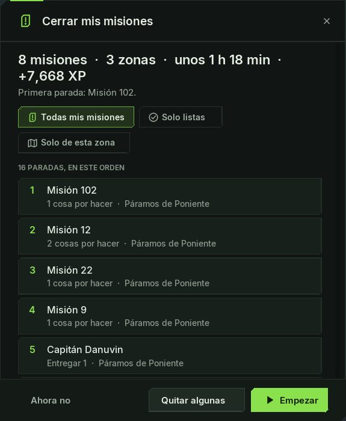
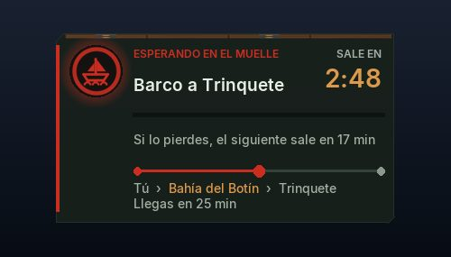
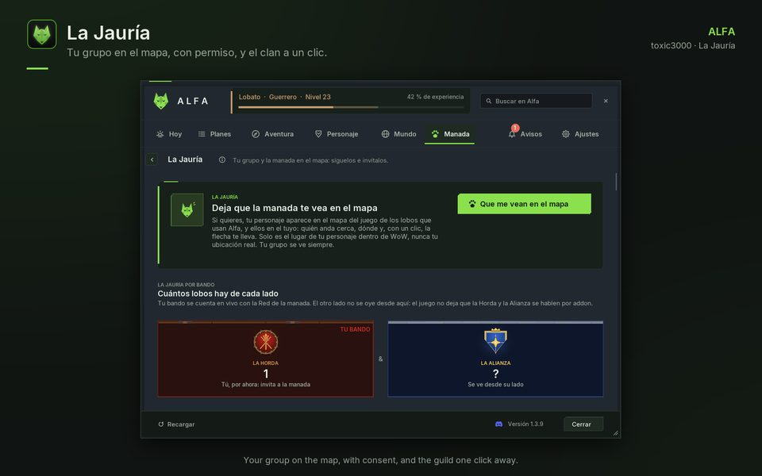
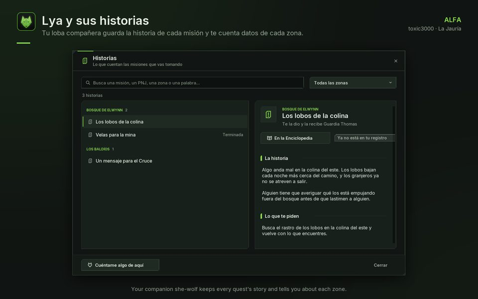
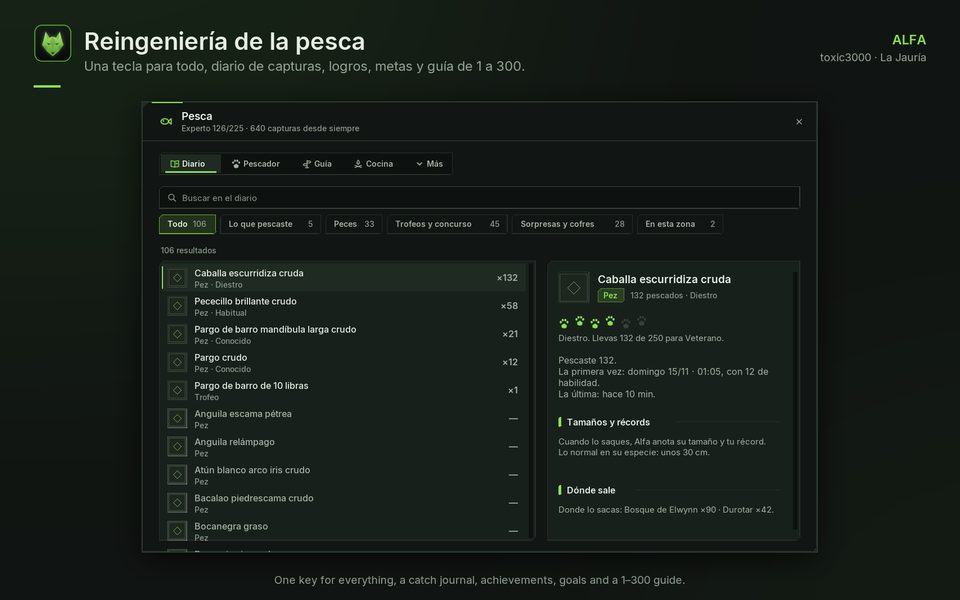
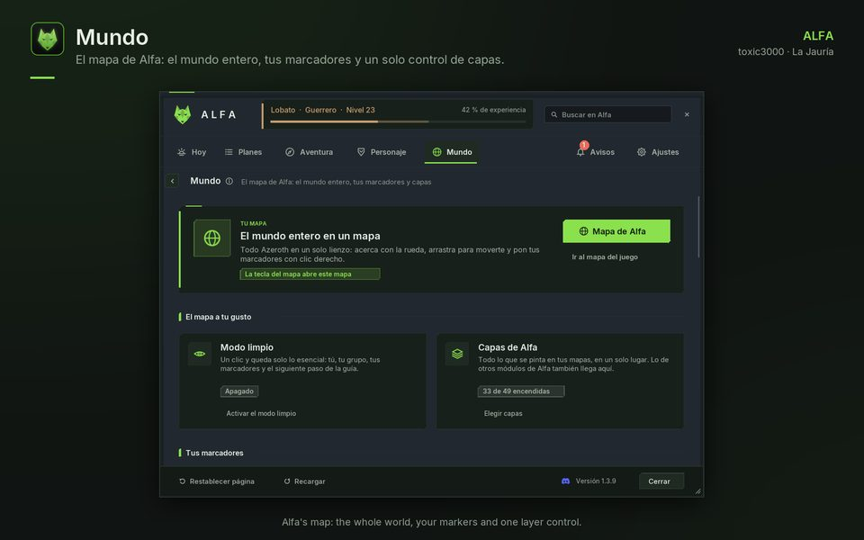
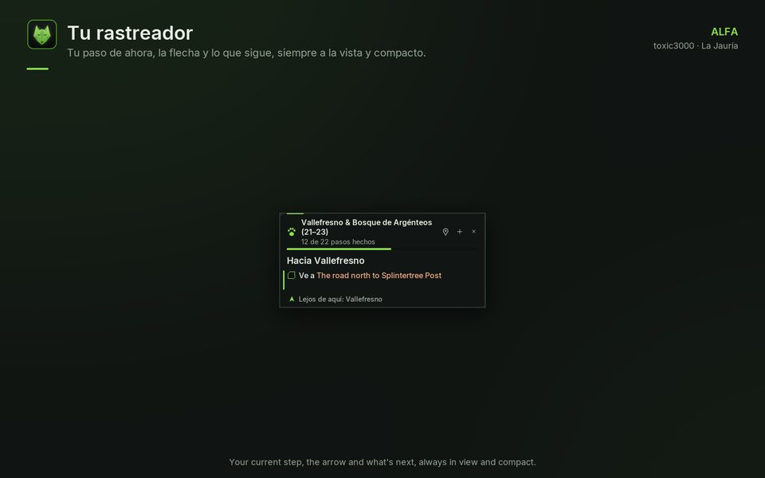
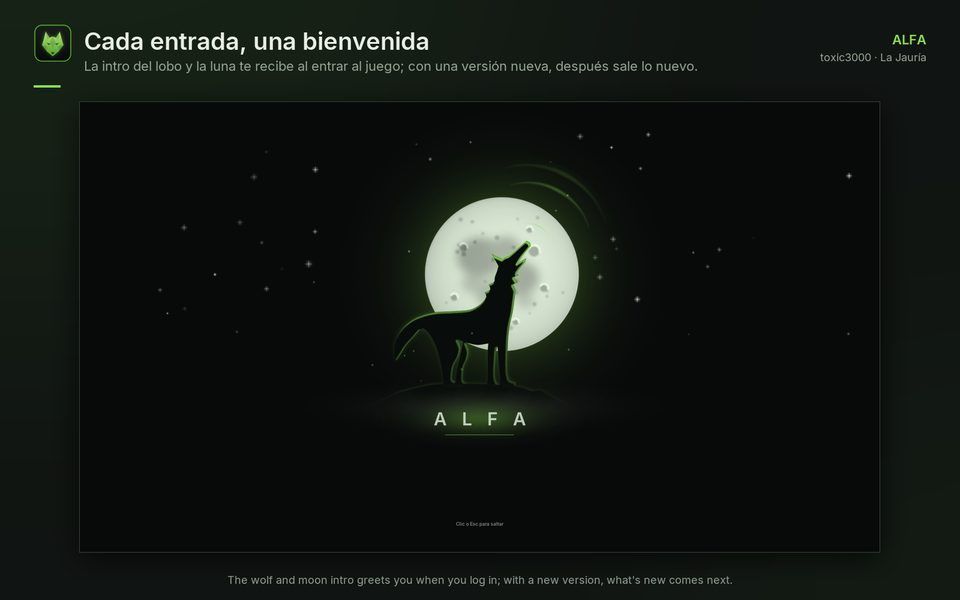

Guías y ruta
Una flecha que te lleva a cada misión, la mejor ruta por zona y tu avance siempre a la vista.

Un solo addon en vez de veinte para World of Warcraft: Forever. Ordenado, guiado, con un solo estilo, y con Lya, una loba negra que te acompaña en el camino.
Alfa junta en una sola ventana lo que normalmente harías con muchos addons, y te va diciendo qué conviene hacer ahora. Todo con el mismo estilo y sin llenarte la pantalla.
Una flecha que te lleva a cada misión, la mejor ruta por zona y tu avance siempre a la vista.
Lo que hay cerca de ti, raros, peligros y lugares por descubrir, en el mapa de Alfa.
Bolsas ordenadas por secciones, búsqueda, mejoras de equipo y lo que vale la pena vender.
Antes de entrar, una lista que se marca sola; por dentro, un mapa con tu avance por jefes.
Guías de profesión por tramos, la pesca con su diario y tus ventas sin complicaciones.
Tu clan junto: quién va a dónde, citas, raros compartidos y un marcador por bando.

Lya es la loba negra que te acompaña. Te platica el lore de la zona, de tus misiones, de tu raza y de tus profesiones, te da consejos y festeja contigo cada nivel. Y sí: le encantan las salchichas.
La versión que cierra la serie 1.3: más rápida, más pulida y con algunas sorpresas.
Alfa carga solo las guías de tus niveles y deja lo demás para cuando lo pidas: entras antes y el juego va más ligero.
El modo para dos monitores, de nuevo y mucho mejor: paneles grandes que se leen de lejos, una vista previa antes de aplicarlo y volver a la normalidad con un clic.
Tu aventura desde que usas Alfa en una ventana bonita: niveles, misiones, mazmorras, peces, oro, récords y tus momentos con Lya.
Más historias de cada zona y misión, y recuerdos de lo que han vivido juntos.
Si quieres, Alfa se viste de tu bando: sus colores, su emblema y sus adornos en cada ventana, en Hoy y en los anuncios.
Los números de tus casillas se ven siempre del mismo tamaño, sin encimarse, aunque restablezcas tus ajustes.
Tu sesión de un vistazo (tiempo, experiencia por hora y oro ganado) y los avisos de la campanita ordenados por día.
Cierra cualquier ventana de Alfa con Esc, ve el atajo de cada botón y encuentra cualquier ajuste aunque lo busques con otras palabras.
Esta es solo una probadita. La lista completa está en las notas de cada versión (CHANGELOG).
Así se ve Alfa en el juego. Toca una imagen para verla en grande.












El manual de Alfa en PDF, con todo explicado página por página, en tu idioma.
Instálalo desde CurseForge o baja el zip (y el instalador para Windows) de la última versión en GitHub. ¿Dudas, ideas o un error? Te esperamos en el Discord de La Jauría.